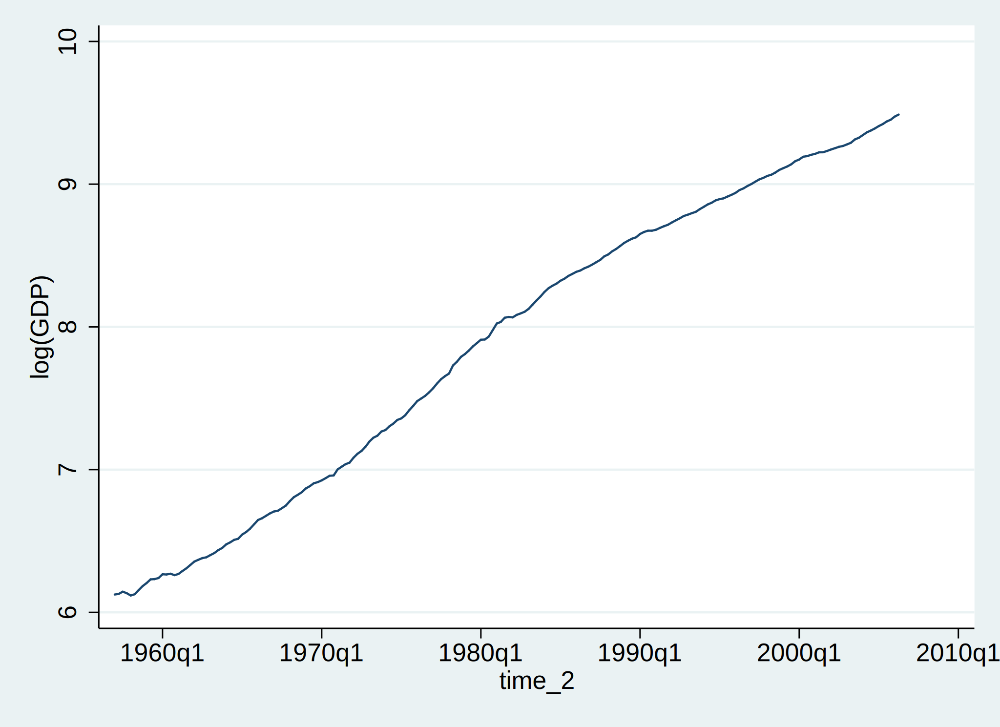

4 Unit Root Tests
time series plot



4.1 ADF Test
gen trend=_n /* this step is necessary b/c _n cannot be used directly as a regressor */
scalar T=198 /* # of nonmissing observations */
scalar pmax=int(12*((T+1)/100)^0.25) /* Schwert (1989), pmax=int[12*{(T+1)/100}^0.25]=14 */
scalar list pmax pmax = 144.1.1 ADF Test in level
reg yyy trend l.yyy l(1/14)d.yyy
estat ic
matrix y_order=r(S)
cap drop touse
gen touse=e(sample) /* set up common sample */
reg yyy trend l.yyy l(1/13)d.yyy if touse==1
estat ic
matrix y_order=(y_order \ r(S))
reg yyy trend l.yyy l(1/12)d.yyy if touse==1
estat ic
matrix y_order=(y_order \ r(S))
reg yyy trend l.yyy l(1/11)d.yyy if touse==1
estat ic
matrix y_order=(y_order \ r(S))
reg yyy trend l.yyy l(1/10)d.yyy if touse==1
estat ic
matrix y_order=(y_order \ r(S))
reg yyy trend l.yyy l(1/9)d.yyy if touse==1
estat ic
matrix y_order=(y_order \ r(S))
reg yyy trend l.yyy l(1/8)d.yyy if touse==1
estat ic
matrix y_order=(y_order \ r(S))
reg yyy trend l.yyy l(1/7)d.yyy if touse==1
estat ic
matrix y_order=(y_order \ r(S))
reg yyy trend l.yyy l(1/6)d.yyy if touse==1
estat ic
matrix y_order=(y_order \ r(S))
reg yyy trend l.yyy l(1/5)d.yyy if touse==1
estat ic
matrix y_order=(y_order \ r(S))
reg yyy trend l.yyy l(1/4)d.yyy if touse==1
estat ic
matrix y_order=(y_order \ r(S))
reg yyy trend l.yyy l(1/3)d.yyy if touse==1
estat ic
matrix y_order=(y_order \ r(S))
reg yyy trend l.yyy l(1/2)d.yyy if touse==1
estat ic
matrix y_order=(y_order \ r(S))
reg yyy trend l.yyy ld.yyy if touse==1
estat ic
matrix y_order=(y_order \ r(S))
reg yyy trend l.yyy if touse==1
estat ic
matrix y_order=(y_order \ r(S)) | N ll0 ll df AIC BIC
-------------+------------------------------------------------------------------
. | 183 -257.0172 633.4724 17 -1232.945 -1178.383
. | 183 -257.0172 632.8139 16 -1233.628 -1182.276
. | 183 -257.0172 632.7759 15 -1235.552 -1187.409
. | 183 -257.0172 632.5419 14 -1237.084 -1192.151
. | 183 -257.0172 628.9216 13 -1231.843 -1190.12
. | 183 -257.0172 625.8929 12 -1227.786 -1189.272
. | 183 -257.0172 623.7661 11 -1225.532 -1190.228
. | 183 -257.0172 623.709 10 -1227.418 -1195.323
. | 183 -257.0172 623.4871 9 -1228.974 -1200.089
. | 183 -257.0172 623.2461 8 -1230.492 -1204.816
. | 183 -257.0172 623.1844 7 -1232.369 -1209.902
. | 183 -257.0172 621.7903 6 -1231.581 -1212.324
. | 183 -257.0172 621.7117 5 -1233.423 -1217.376
. | 183 -257.0172 618.4891 4 -1228.978 -1216.14
. | 183 -257.0172 609.5378 3 -1213.076 -1203.447
Augmented Dickey-Fuller test for unit root Number of obs = 186
---------- Interpolated Dickey-Fuller ---------
Test 1% Critical 5% Critical 10% Critical
Statistic Value Value Value
------------------------------------------------------------------------------
Z(t) -1.420 -4.011 -3.439 -3.139
------------------------------------------------------------------------------
MacKinnon approximate p-value for Z(t) = 0.8551
Augmented Dickey-Fuller test for unit root Number of obs = 195
---------- Interpolated Dickey-Fuller ---------
Test 1% Critical 5% Critical 10% Critical
Statistic Value Value Value
------------------------------------------------------------------------------
Z(t) -0.099 -4.008 -3.437 -3.137
------------------------------------------------------------------------------
MacKinnon approximate p-value for Z(t) = 0.9931Lag order = 11 (AIC)
reg yyy trend l.yyy l(1/11)d.yyy
lincom L1.yyy-1
cap drop res
predict res, residuals
corrgram res, lags(24) /* not serially correlated */ Source | SS df MS Number of obs = 186
-------------+---------------------------------- F(13, 172) > 99999.00
Model | 186.820141 13 14.3707801 Prob > F = 0.0000
Residual | .011091436 172 .000064485 R-squared = 0.9999
-------------+---------------------------------- Adj R-squared = 0.9999
Total | 186.831232 185 1.00989855 Root MSE = .00803
------------------------------------------------------------------------------
yyy | Coef. Std. Err. t P>|t| [95% Conf. Interval]
-------------+----------------------------------------------------------------
trend | .0001364 .0001098 1.24 0.216 -.0000804 .0003531
|
yyy |
L1. | .9918322 .0057537 172.38 0.000 .9804752 1.003189
LD. | .1760053 .0744998 2.36 0.019 .0289536 .3230569
L2D. | .1483786 .0741584 2.00 0.047 .0020009 .2947563
L3D. | -.0004151 .0744099 -0.01 0.996 -.1472893 .1464591
L4D. | .1089375 .0738653 1.47 0.142 -.0368618 .2547367
L5D. | -.0436229 .0741307 -0.59 0.557 -.189946 .1027002
L6D. | .0517838 .0736841 0.70 0.483 -.0936577 .1972254
L7D. | .0045833 .0734252 0.06 0.950 -.1403472 .1495138
L8D. | -.0908234 .0712122 -1.28 0.204 -.2313857 .0497389
L9D. | .0964239 .0705953 1.37 0.174 -.0429209 .2357686
L10D. | .1633627 .0705073 2.32 0.022 .0241917 .3025336
L11D. | .1689831 .0698401 2.42 0.017 .0311291 .3068372
|
_cons | .0546618 .033325 1.64 0.103 -.0111169 .1204405
------------------------------------------------------------------------------
( 1) L.yyy = 1
------------------------------------------------------------------------------
yyy | Coef. Std. Err. t P>|t| [95% Conf. Interval]
-------------+----------------------------------------------------------------
(1) | -.0081678 .0057537 -1.42 0.158 -.0195248 .0031891
------------------------------------------------------------------------------
(14 missing values generated)
-1 0 1 -1 0 1
LAG AC PAC Q Prob>Q [Autocorrelation] [Partial Autocor]
-------------------------------------------------------------------------------
1 0.0172 0.0172 .05595 0.8130 | |
2 0.0118 0.0112 .08224 0.9597 | |
3 -0.0383 -0.0390 .36181 0.9480 | |
4 -0.0230 -0.0211 .46359 0.9769 | |
5 -0.0815 -0.0815 1.7453 0.8831 | |
6 -0.0253 -0.0218 1.8692 0.9313 | |
7 -0.0281 -0.0281 2.023 0.9586 | |
8 0.0197 0.0153 2.0992 0.9778 | |
9 -0.0024 -0.0058 2.1003 0.9898 | |
10 -0.0441 -0.0562 2.4873 0.9911 | |
11 -0.0461 -0.0488 2.9115 0.9918 | |
12 -0.1446 -0.1581 7.1136 0.8500 -| -|
13 -0.0234 -0.0250 7.2241 0.8902 | |
14 0.0068 0.0022 7.2334 0.9253 | |
15 -0.0653 -0.0913 8.1042 0.9195 | |
16 0.1587 0.1656 13.285 0.6518 |- |-
17 -0.0205 -0.0746 13.373 0.7109 | |
18 0.0893 0.0887 15.033 0.6597 | |
19 -0.0332 -0.0560 15.264 0.7057 | |
20 0.0657 0.0526 16.174 0.7058 | |
21 0.0069 0.0435 16.184 0.7592 | |
22 0.0282 0.0019 16.354 0.7979 | |
23 -0.0835 -0.0513 17.849 0.7656 | |
24 0.0556 0.0484 18.517 0.7772 | | Lag order = 2 (SBC)
reg yyy trend l.yyy l(1/2)d.yyy
lincom L1.yyy-1
cap drop res
predict res, residuals
corrgram res, lags(24) /* serially correlated */ Source | SS df MS Number of obs = 195
-------------+---------------------------------- F(4, 190) > 99999.00
Model | 214.947669 4 53.7369172 Prob > F = 0.0000
Residual | .015137911 190 .000079673 R-squared = 0.9999
-------------+---------------------------------- Adj R-squared = 0.9999
Total | 214.962807 194 1.1080557 Root MSE = .00893
------------------------------------------------------------------------------
yyy | Coef. Std. Err. t P>|t| [95% Conf. Interval]
-------------+----------------------------------------------------------------
trend | -4.28e-06 .0001066 -0.04 0.968 -.0002147 .0002061
|
yyy |
L1. | .9994388 .0056897 175.66 0.000 .9882158 1.010662
LD. | .3077581 .0720781 4.27 0.000 .165582 .4499343
L2D. | .1453238 .0720991 2.02 0.045 .0031063 .2875413
|
_cons | .0142463 .0339685 0.42 0.675 -.0527575 .08125
------------------------------------------------------------------------------
( 1) L.yyy = 1
------------------------------------------------------------------------------
yyy | Coef. Std. Err. t P>|t| [95% Conf. Interval]
-------------+----------------------------------------------------------------
(1) | -.0005612 .0056897 -0.10 0.922 -.0117842 .0106618
------------------------------------------------------------------------------
(5 missing values generated)
-1 0 1 -1 0 1
LAG AC PAC Q Prob>Q [Autocorrelation] [Partial Autocor]
-------------------------------------------------------------------------------
1 0.0026 0.0026 .00139 0.9703 | |
2 -0.0334 -0.0333 .22353 0.8943 | |
3 -0.0590 -0.0605 .91896 0.8208 | |
4 0.0674 0.0657 1.8318 0.7667 | |
5 -0.0393 -0.0370 2.144 0.8289 | |
6 0.0786 0.0802 3.3995 0.7573 | |
7 0.0522 0.0613 3.9567 0.7848 | |
8 -0.0760 -0.0829 5.1435 0.7421 | |
9 0.0576 0.0666 5.8279 0.7570 | |
10 0.1709 0.1663 11.892 0.2924 |- |-
11 0.2196 0.2283 21.957 0.0247 |- |-
12 -0.0240 0.0149 22.078 0.0367 | |
13 0.0249 0.0296 22.209 0.0522 | |
14 0.0279 0.0436 22.374 0.0712 | |
15 -0.0402 -0.0718 22.72 0.0903 | |
16 0.1188 0.1398 25.75 0.0577 | |-
17 -0.0232 -0.0606 25.865 0.0769 | |
18 0.0984 0.1187 27.966 0.0626 | |
19 -0.0226 0.0113 28.078 0.0819 | |
20 0.1350 0.0404 32.076 0.0425 |- |
21 0.0377 0.0472 32.389 0.0534 | |
22 0.0443 -0.0346 32.825 0.0644 | |
23 -0.0803 -0.0478 34.267 0.0614 | |
24 0.0262 -0.0079 34.422 0.0774 | | 4.1.2 ADF Test in first-difference
reg d.yyy ld.yyy l(1/14)d2.yyy
estat ic
matrix dy_order=r(S)
cap drop touse
gen touse=e(sample) /* set up common sample */
reg d.yyy ld.yyy l(1/13)d2.yyy if touse==1
estat ic
matrix dy_order=(dy_order \ r(S))
reg d.yyy ld.yyy l(1/12)d2.yyy if touse==1
estat ic
matrix dy_order=(dy_order \ r(S))
reg d.yyy ld.yyy l(1/11)d2.yyy if touse==1
estat ic
matrix dy_order=(dy_order \ r(S))
reg d.yyy ld.yyy l(1/10)d2.yyy if touse==1
estat ic
matrix dy_order=(dy_order \ r(S))
reg d.yyy ld.yyy l(1/9)d2.yyy if touse==1
estat ic
matrix dy_order=(dy_order \ r(S))
reg d.yyy ld.yyy l(1/8)d2.yyy if touse==1
estat ic
matrix dy_order=(dy_order \ r(S))
reg d.yyy ld.yyy l(1/7)d2.yyy if touse==1
estat ic
matrix dy_order=(dy_order \ r(S))
reg d.yyy ld.yyy l(1/6)d2.yyy if touse==1
estat ic
matrix dy_order=(dy_order \ r(S))
reg d.yyy ld.yyy l(1/5)d2.yyy if touse==1
estat ic
matrix dy_order=(dy_order \ r(S))
reg d.yyy ld.yyy l(1/4)d2.yyy if touse==1
estat ic
matrix dy_order=(dy_order \ r(S))
reg d.yyy ld.yyy l(1/3)d2.yyy if touse==1
estat ic
matrix dy_order=(dy_order \ r(S))
reg d.yyy ld.yyy l(1/2)d2.yyy if touse==1
estat ic
matrix dy_order=(dy_order \ r(S))
reg d.yyy ld.yyy ld2.yyy if touse==1
estat ic
matrix dy_order=(dy_order \ r(S))
reg d.yyy ld.yyy if touse==1
estat ic
matrix dy_order=(dy_order \ r(S)) | N ll0 ll df AIC BIC
-------------+------------------------------------------------------------------
. | 182 602.7104 630.0384 16 -1228.077 -1176.813
. | 182 602.7104 629.8362 15 -1229.672 -1181.612
. | 182 602.7104 629.5994 14 -1231.199 -1186.343
. | 182 602.7104 629.5726 13 -1233.145 -1191.493
. | 182 602.7104 628.7136 12 -1233.427 -1194.979
. | 182 602.7104 626.7977 11 -1231.595 -1196.351
. | 182 602.7104 624.4462 10 -1228.892 -1196.852
. | 182 602.7104 621.2728 9 -1224.546 -1195.71
. | 182 602.7104 621.2664 8 -1226.533 -1200.901
. | 182 602.7104 620.8356 7 -1227.671 -1205.243
. | 182 602.7104 619.974 6 -1227.948 -1208.724
. | 182 602.7104 619.8678 5 -1229.736 -1213.716
. | 182 602.7104 618.2495 4 -1228.499 -1215.683
. | 182 602.7104 618.19 3 -1230.38 -1220.768
. | 182 602.7104 614.6538 2 -1225.308 -1218.9
Augmented Dickey-Fuller test for unit root Number of obs = 186
---------- Interpolated Dickey-Fuller ---------
Test 1% Critical 5% Critical 10% Critical
Statistic Value Value Value
------------------------------------------------------------------------------
Z(t) -2.027 -3.481 -2.884 -2.574
------------------------------------------------------------------------------
MacKinnon approximate p-value for Z(t) = 0.2750
Augmented Dickey-Fuller test for unit root Number of obs = 195
---------- Interpolated Dickey-Fuller ---------
Test 1% Critical 5% Critical 10% Critical
Statistic Value Value Value
------------------------------------------------------------------------------
Z(t) -6.662 -3.478 -2.884 -2.574
------------------------------------------------------------------------------
MacKinnon approximate p-value for Z(t) = 0.0000Lag order = 10 (AIC)
reg d.yyy ld.yyy l(1/10)d2.yyy
lincom LD.yyy-1
cap drop res
predict res, residuals
corrgram res, lags(24) /* not serially correlated */ Source | SS df MS Number of obs = 186
-------------+---------------------------------- F(11, 174) = 5.76
Model | .004142641 11 .000376604 Prob > F = 0.0000
Residual | .011379402 174 .000065399 R-squared = 0.2669
-------------+---------------------------------- Adj R-squared = 0.2205
Total | .015522044 185 .000083903 Root MSE = .00809
------------------------------------------------------------------------------
D.yyy | Coef. Std. Err. t P>|t| [95% Conf. Interval]
-------------+----------------------------------------------------------------
yyy |
LD. | .7620599 .117401 6.49 0.000 .5303465 .9937733
LD2. | -.5733235 .1279896 -4.48 0.000 -.8259355 -.3207115
L2D2. | -.4225229 .1292552 -3.27 0.001 -.6776328 -.1674131
L3D2. | -.425238 .1239827 -3.43 0.001 -.6699415 -.1805344
L4D2. | -.315886 .1216715 -2.60 0.010 -.556028 -.075744
L5D2. | -.3612647 .1160146 -3.11 0.002 -.5902418 -.1322876
L6D2. | -.3098597 .1071544 -2.89 0.004 -.5213495 -.0983699
L7D2. | -.3056006 .0993365 -3.08 0.002 -.5016603 -.109541
L8D2. | -.4012991 .0901717 -4.45 0.000 -.5792701 -.223328
L9D2. | -.3085368 .0838525 -3.68 0.000 -.4740358 -.1430378
L10D2. | -.1524012 .0693338 -2.20 0.029 -.2892449 -.0155576
|
_cons | .0042898 .0021232 2.02 0.045 .0000993 .0084804
------------------------------------------------------------------------------
( 1) LD.yyy = 1
------------------------------------------------------------------------------
D.yyy | Coef. Std. Err. t P>|t| [95% Conf. Interval]
-------------+----------------------------------------------------------------
(1) | -.2379401 .117401 -2.03 0.044 -.4696535 -.0062267
------------------------------------------------------------------------------
(14 missing values generated)
-1 0 1 -1 0 1
LAG AC PAC Q Prob>Q [Autocorrelation] [Partial Autocor]
-------------------------------------------------------------------------------
1 0.0191 0.0191 .06907 0.7927 | |
2 0.0222 0.0215 .16238 0.9220 | |
3 -0.0234 -0.0248 .26739 0.9660 | |
4 -0.0078 -0.0066 .27909 0.9911 | |
5 -0.0616 -0.0617 1.0132 0.9615 | |
6 -0.0078 -0.0037 1.025 0.9846 | |
7 -0.0093 -0.0068 1.0419 0.9941 | |
8 0.0413 0.0401 1.3763 0.9946 | |
9 0.0205 0.0198 1.4592 0.9974 | |
10 -0.0187 -0.0270 1.5284 0.9988 | |
11 -0.0133 -0.0119 1.5638 0.9995 | |
12 -0.1281 -0.1338 4.8599 0.9625 -| -|
13 -0.0088 0.0031 4.8755 0.9778 | |
14 0.0190 0.0306 4.9491 0.9865 | |
15 -0.0546 -0.0633 5.5596 0.9862 | |
16 0.1672 0.1910 11.309 0.7900 |- |-
17 -0.0111 -0.0512 11.334 0.8387 | |
18 0.0992 0.1103 13.382 0.7684 | |
19 -0.0233 -0.0371 13.496 0.8123 | |
20 0.0793 0.0777 14.821 0.7865 | |
21 0.0196 0.0630 14.902 0.8278 | |
22 0.0390 0.0190 15.227 0.8523 | |
23 -0.0753 -0.0357 16.444 0.8356 | |
24 0.0635 0.0571 17.313 0.8350 | | Lag order = 1 (SBC)
reg d.yyy ld.yyy ld2.yyy
lincom LD.yyy-1
cap drop res
predict res, residuals
corrgram res, lags(24) /* serially correlated */ Source | SS df MS Number of obs = 195
-------------+---------------------------------- F(2, 192) = 18.30
Model | .002910271 2 .001455136 Prob > F = 0.0000
Residual | .015268939 192 .000079526 R-squared = 0.1601
-------------+---------------------------------- Adj R-squared = 0.1513
Total | .01817921 194 .000093707 Root MSE = .00892
------------------------------------------------------------------------------
D.yyy | Coef. Std. Err. t P>|t| [95% Conf. Interval]
-------------+----------------------------------------------------------------
yyy |
LD. | .4693837 .0796423 5.89 0.000 .3122976 .6264698
LD2. | -.1527322 .07106 -2.15 0.033 -.2928907 -.0125737
|
_cons | .0091067 .0015045 6.05 0.000 .0061392 .0120741
------------------------------------------------------------------------------
( 1) LD.yyy = 1
------------------------------------------------------------------------------
D.yyy | Coef. Std. Err. t P>|t| [95% Conf. Interval]
-------------+----------------------------------------------------------------
(1) | -.5306163 .0796423 -6.66 0.000 -.6877024 -.3735302
------------------------------------------------------------------------------
(5 missing values generated)
-1 0 1 -1 0 1
LAG AC PAC Q Prob>Q [Autocorrelation] [Partial Autocor]
-------------------------------------------------------------------------------
1 0.0042 0.0041 .00344 0.9532 | |
2 -0.0308 -0.0306 .19221 0.9084 | |
3 -0.0515 -0.0527 .72389 0.8676 | |
4 0.0742 0.0735 1.8324 0.7666 | |
5 -0.0326 -0.0299 2.047 0.8426 | |
6 0.0860 0.0885 3.5488 0.7375 | |
7 0.0585 0.0676 4.2492 0.7507 | |
8 -0.0696 -0.0768 5.2444 0.7312 | |
9 0.0645 0.0730 6.104 0.7295 | |
10 0.1776 0.1714 12.652 0.2438 |- |-
11 0.2273 0.2351 23.434 0.0153 |- |-
12 -0.0152 0.0214 23.483 0.0239 | |
13 0.0366 0.0369 23.765 0.0334 | |
14 0.0402 0.0491 24.109 0.0445 | |
15 -0.0290 -0.0683 24.288 0.0604 | |
16 0.1296 0.1437 27.892 0.0326 |- |-
17 -0.0129 -0.0589 27.928 0.0458 | |
18 0.1072 0.1215 30.423 0.0335 | |
19 -0.0124 0.0132 30.457 0.0463 | |
20 0.1445 0.0428 35.041 0.0199 |- |
21 0.0491 0.0498 35.574 0.0244 | |
22 0.0546 -0.0332 36.236 0.0286 | |
23 -0.0700 -0.0477 37.331 0.0300 | |
24 0.0356 -0.0085 37.615 0.0379 | | 4.1.3 ADF Test in second-difference
reg d2.yyy ld2.yyy l(1/14)d3.yyy, noconst
estat ic
matrix d2y_order=r(S)
cap drop touse
gen touse=e(sample) /* set up common sample */
reg d2.yyy ld2.yyy l(1/13)d3.yyy if touse==1, noconst
estat ic
matrix d2y_order=(d2y_order \ r(S))
reg d2.yyy ld2.yyy l(1/12)d3.yyy if touse==1, noconst
estat ic
matrix d2y_order=(d2y_order \ r(S))
reg d2.yyy ld2.yyy l(1/11)d3.yyy if touse==1, noconst
estat ic
matrix d2y_order=(d2y_order \ r(S))
reg d2.yyy ld2.yyy l(1/10)d3.yyy if touse==1, noconst
estat ic
matrix d2y_order=(d2y_order \ r(S))
reg d2.yyy ld2.yyy l(1/9)d3.yyy if touse==1, noconst
estat ic
matrix d2y_order=(d2y_order \ r(S))
reg d2.yyy ld2.yyy l(1/8)d3.yyy if touse==1, noconst
estat ic
matrix d2y_order=(d2y_order \ r(S))
reg d2.yyy ld2.yyy l(1/7)d3.yyy if touse==1, noconst
estat ic
matrix d2y_order=(d2y_order \ r(S))
reg d2.yyy ld2.yyy l(1/6)d3.yyy if touse==1, noconst
estat ic
matrix d2y_order=(d2y_order \ r(S))
reg d2.yyy ld2.yyy l(1/5)d3.yyy if touse==1, noconst
estat ic
matrix d2y_order=(d2y_order \ r(S))
reg d2.yyy ld2.yyy l(1/4)d3.yyy if touse==1, noconst
estat ic
matrix d2y_order=(d2y_order \ r(S))
reg d2.yyy ld2.yyy l(1/3)d3.yyy if touse==1, noconst
estat ic
matrix d2y_order=(d2y_order \ r(S))
reg d2.yyy ld2.yyy l(1/2)d3.yyy if touse==1, noconst
estat ic
matrix d2y_order=(d2y_order \ r(S))
reg d2.yyy ld2.yyy ld3.yyy if touse==1, noconst
estat ic
matrix d2y_order=(d2y_order \ r(S))
reg d2.yyy ld2.yyy if touse==1, noconst
estat ic
matrix d2y_order=(d2y_order \ r(S)) | N ll0 ll df AIC BIC
-------------+------------------------------------------------------------------
. | 181 . 626.6505 15 -1223.301 -1175.324
. | 181 . 623.7481 14 -1219.496 -1174.717
. | 181 . 623.663 13 -1221.326 -1179.746
. | 181 . 623.1454 12 -1222.291 -1183.909
. | 181 . 623.0587 11 -1224.117 -1188.934
. | 181 . 622.4375 10 -1224.875 -1192.89
. | 181 . 619.8311 9 -1221.662 -1192.876
. | 181 . 616.0669 8 -1216.134 -1190.546
. | 181 . 610.7646 7 -1207.529 -1185.14
. | 181 . 610.2553 6 -1208.511 -1189.32
. | 181 . 608.531 5 -1207.062 -1191.07
. | 181 . 605.305 4 -1202.61 -1189.816
. | 181 . 604.7922 3 -1203.584 -1193.989
. | 181 . 598.7061 2 -1193.412 -1187.015
. | 181 . 595.0522 1 -1188.104 -1184.906
Augmented Dickey-Fuller test for unit root Number of obs = 186
---------- Interpolated Dickey-Fuller ---------
Test 1% Critical 5% Critical 10% Critical
Statistic Value Value Value
------------------------------------------------------------------------------
Z(t) -9.043 -2.589 -1.950 -1.616Lag order = 9 (AIC)
reg d2.yyy ld2.yyy l(1/9)d3.yyy
lincom LD2.yyy-1
cap drop res
predict res, residuals
corrgram res, lags(24) /* not serially correlated */ Source | SS df MS Number of obs = 186
-------------+---------------------------------- F(10, 175) = 13.00
Model | .008653897 10 .00086539 Prob > F = 0.0000
Residual | .011648036 175 .00006656 R-squared = 0.4263
-------------+---------------------------------- Adj R-squared = 0.3935
Total | .020301934 185 .00010974 Root MSE = .00816
------------------------------------------------------------------------------
D2.yyy | Coef. Std. Err. t P>|t| [95% Conf. Interval]
-------------+----------------------------------------------------------------
yyy |
LD2. | -4.719296 .6338993 -7.44 0.000 -5.970368 -3.468225
LD3. | 3.933674 .5948827 6.61 0.000 2.759606 5.107742
L2D3. | 3.321413 .5381876 6.17 0.000 2.259239 4.383586
L3D3. | 2.729197 .4778348 5.71 0.000 1.786136 3.672258
L4D3. | 2.267236 .4090331 5.54 0.000 1.459963 3.074509
L5D3. | 1.780092 .3381174 5.26 0.000 1.112779 2.447404
L6D3. | 1.368798 .2691074 5.09 0.000 .8376847 1.899912
L7D3. | .9833365 .1992363 4.94 0.000 .5901212 1.376552
L8D3. | .5220797 .134587 3.88 0.000 .2564571 .7877023
L9D3. | .1728398 .0692029 2.50 0.013 .03626 .3094195
|
_cons | .0001582 .0005987 0.26 0.792 -.0010235 .0013398
------------------------------------------------------------------------------
( 1) LD2.yyy = 1
------------------------------------------------------------------------------
D2.yyy | Coef. Std. Err. t P>|t| [95% Conf. Interval]
-------------+----------------------------------------------------------------
(1) | -5.719296 .6338993 -9.02 0.000 -6.970368 -4.468225
------------------------------------------------------------------------------
(14 missing values generated)
-1 0 1 -1 0 1
LAG AC PAC Q Prob>Q [Autocorrelation] [Partial Autocor]
-------------------------------------------------------------------------------
1 0.0155 0.0155 .04541 0.8313 | |
2 0.0180 0.0175 .10713 0.9478 | |
3 -0.0340 -0.0351 .32827 0.9546 | |
4 -0.0153 -0.0135 .37306 0.9846 | |
5 -0.0740 -0.0738 1.4321 0.9208 | |
6 -0.0252 -0.0212 1.5554 0.9557 | |
7 -0.0293 -0.0268 1.7226 0.9736 | |
8 0.0208 0.0185 1.8073 0.9864 | |
9 -0.0001 -0.0018 1.8073 0.9942 | |
10 -0.0422 -0.0530 2.1615 0.9949 | |
11 -0.0400 -0.0418 2.4808 0.9960 | |
12 -0.1386 -0.1507 6.3428 0.8978 -| -|
13 -0.0191 -0.0189 6.4162 0.9297 | |
14 0.0089 0.0079 6.4322 0.9544 | |
15 -0.0651 -0.0897 7.2983 0.9488 | |
16 0.1582 0.1678 12.448 0.7126 |- |-
17 -0.0232 -0.0746 12.559 0.7652 | |
18 0.0895 0.0886 14.225 0.7143 | |
19 -0.0317 -0.0524 14.435 0.7577 | |
20 0.0717 0.0619 15.518 0.7460 | |
21 0.0083 0.0451 15.532 0.7953 | |
22 0.0301 0.0048 15.725 0.8293 | |
23 -0.0830 -0.0494 17.204 0.7991 | |
24 0.0532 0.0450 17.814 0.8119 | | AIC: yyy ~ I(2) with drift; SBC: yyy ~ I(1) with drift
4.2 ADF-GLS Tests
/* by default, p-max is set according to Schwert (1989), i.e., pmax=int[12*{(T+1)/100}^0.25]=14 */
dfgls yyy /* MAIC: P=2, SBC: P=2 */ DF-GLS for yyy Number of obs = 183
Maxlag = 14 chosen by Schwert criterion
DF-GLS tau 1% Critical 5% Critical 10% Critical
[lags] Test Statistic Value Value Value
------------------------------------------------------------------------------
14 -2.022 -3.462 -2.798 -2.521
13 -1.859 -3.462 -2.811 -2.533
12 -1.836 -3.462 -2.824 -2.545
11 -1.979 -3.462 -2.837 -2.556
10 -1.581 -3.462 -2.849 -2.568
9 -1.266 -3.462 -2.861 -2.579
8 -1.044 -3.462 -2.872 -2.589
7 -1.055 -3.462 -2.883 -2.599
6 -0.967 -3.462 -2.893 -2.609
5 -0.874 -3.462 -2.903 -2.618
4 -0.889 -3.462 -2.913 -2.626
3 -0.699 -3.462 -2.922 -2.634
2 -0.702 -3.462 -2.930 -2.642
1 -0.422 -3.462 -2.938 -2.649
Opt Lag (Ng-Perron seq t) = 11 with RMSE .0076429
Min SC = -9.519211 at lag 2 with RMSE .0082108
Min MAIC = -9.577197 at lag 2 with RMSE .0082108DF-GLS for yyy Number of obs = 195
DF-GLS tau 1% Critical 5% Critical 10% Critical
[lags] Test Statistic Value Value Value
------------------------------------------------------------------------------
2 -0.557 -3.462 -2.925 -2.637
1 -0.343 -3.462 -2.932 -2.643
Opt Lag (Ng-Perron seq t) = 2 with RMSE .0088499
Min SC = -9.374977 at lag 1 with RMSE .0089641
Min MAIC = -9.430886 at lag 2 with RMSE .0088499DF-GLS for D.yyy Number of obs = 182
Maxlag = 14 chosen by Schwert criterion
DF-GLS mu 1% Critical 5% Critical 10% Critical
[lags] Test Statistic Value Value Value
------------------------------------------------------------------------------
14 -0.612 -2.587 -1.957 -1.649
13 -0.588 -2.587 -1.964 -1.656
12 -0.653 -2.587 -1.971 -1.663
11 -0.689 -2.587 -1.978 -1.669
10 -0.614 -2.587 -1.985 -1.676
9 -0.769 -2.587 -1.992 -1.682
8 -0.978 -2.587 -1.998 -1.688
7 -1.296 -2.587 -2.005 -1.694
6 -1.407 -2.587 -2.011 -1.700
5 -1.648 -2.587 -2.017 -1.705
4 -1.999 -2.587 -2.023 -1.711
3 -2.144 -2.587 -2.028 -1.715
2 -2.826 -2.587 -2.033 -1.720
1 -3.388 -2.587 -2.038 -1.725
Opt Lag (Ng-Perron seq t) = 10 with RMSE .007741
Min SC = -9.435891 at lag 3 with RMSE .008437
Min MAIC = -9.606157 at lag 10 with RMSE .007741DF-GLS for D.yyy Number of obs = 186
DF-GLS mu 1% Critical 5% Critical 10% Critical
[lags] Test Statistic Value Value Value
------------------------------------------------------------------------------
10 -0.657 -2.587 -1.985 -1.675
9 -0.848 -2.587 -1.991 -1.681
8 -1.162 -2.587 -1.998 -1.687
7 -1.537 -2.587 -2.004 -1.693
6 -1.601 -2.587 -2.010 -1.698
5 -1.761 -2.587 -2.016 -1.704
4 -2.017 -2.587 -2.021 -1.709
3 -2.178 -2.587 -2.027 -1.714
2 -2.813 -2.587 -2.032 -1.718
1 -3.440 -2.587 -2.036 -1.722
Opt Lag (Ng-Perron seq t) = 10 with RMSE .0079054
Min SC = -9.392969 at lag 3 with RMSE .0086286
Min MAIC = -9.565683 at lag 10 with RMSE .0079054DF-GLS for D.yyy Number of obs = 193
DF-GLS mu 1% Critical 5% Critical 10% Critical
[lags] Test Statistic Value Value Value
------------------------------------------------------------------------------
3 -2.601 -2.587 -2.024 -1.711
2 -3.333 -2.587 -2.029 -1.715
1 -3.971 -2.587 -2.033 -1.719
Opt Lag (Ng-Perron seq t) = 3 with RMSE .0089982
Min SC = -9.312396 at lag 3 with RMSE .0089982
Min MAIC = -9.293625 at lag 3 with RMSE .0089982AIC: yyy ~ I(2) with drift; SBC: yyy ~ I(1) with drift